- 휴대폰이나 컴퓨터에서 photolee0220-cpu.github.io/photolee 로 접속합니다. (위 QR 코드를 찍어도 됩니다)
- 관리자에게 받은 아이디와 임시 비밀번호를 넣고 로그인을 누릅니다.
- 처음 로그인하면 본인이 쓸 새 비밀번호(6자 이상)를 정합니다.
아이디·비밀번호는 다른 사람과 공유하지 마세요. 잊어버리면 관리자에게 초기화를 요청하면 됩니다.
주소로 들어가 개별로 받은 아이디와 임시 비밀번호로 로그인합니다.
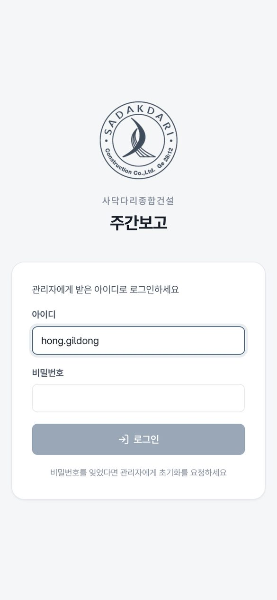
한 번만 해두면 앱처럼 아이콘을 눌러 바로 열 수 있고, 알림도 받을 수 있습니다.
메뉴 이번 주 작성에서 씁니다. 입력하면 자동으로 저장됩니다. 저장 버튼이 따로 없고, 칸 아래 ✓ 저장됨이 보이면 저장된 것입니다.
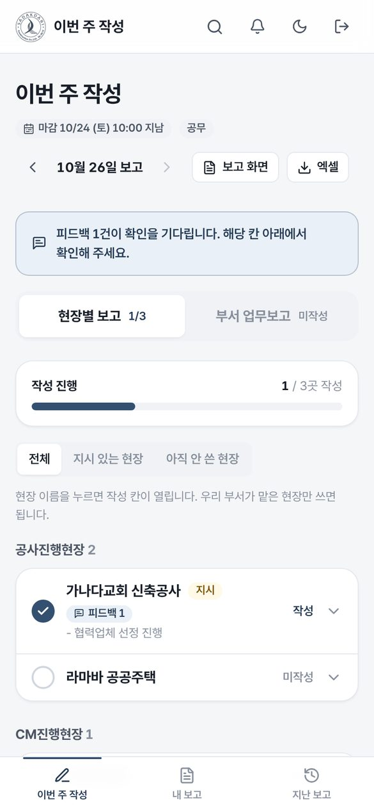
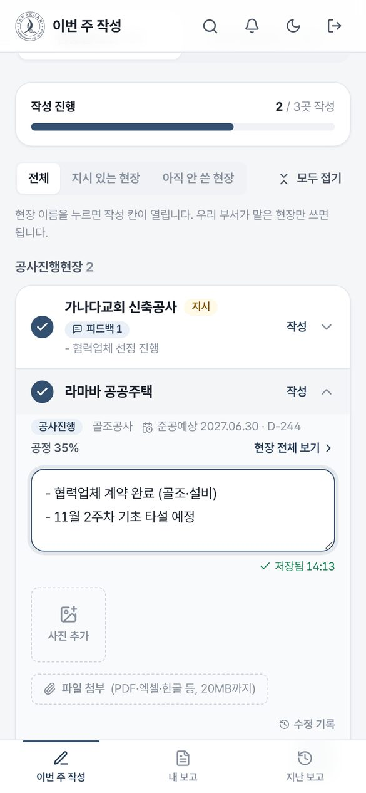
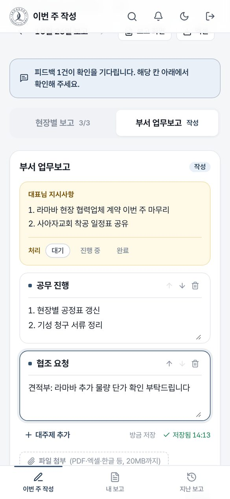
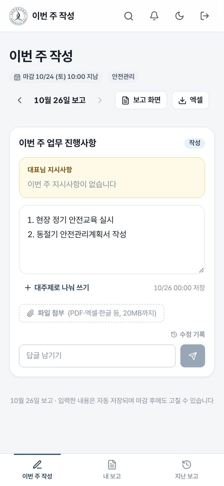
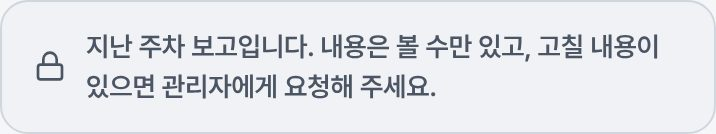
대표님·본부장님이 남긴 피드백과 대표님 지시사항을 꼭 확인해 주세요.
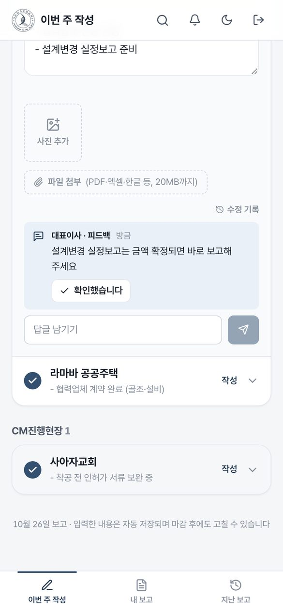
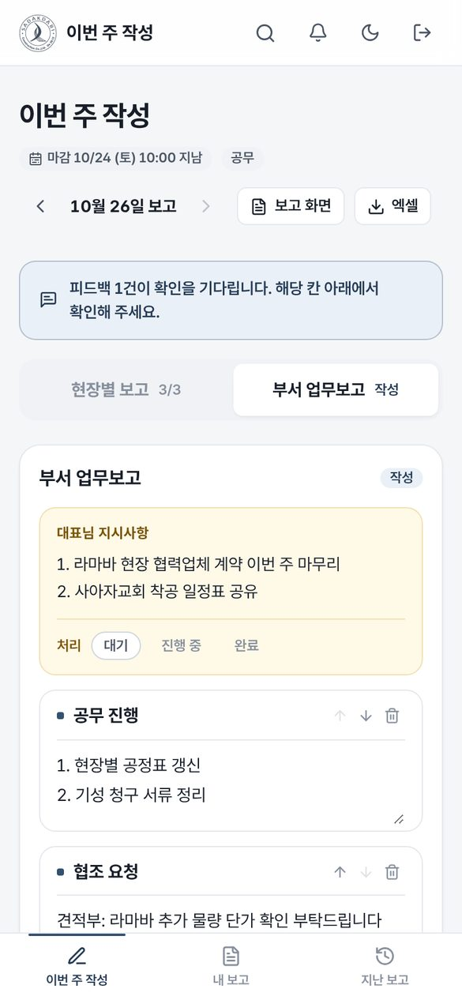
메뉴 내 보고를 엽니다. 회의 때는 휴대폰이나 태블릿으로 이 화면을 보면서 보고하세요.
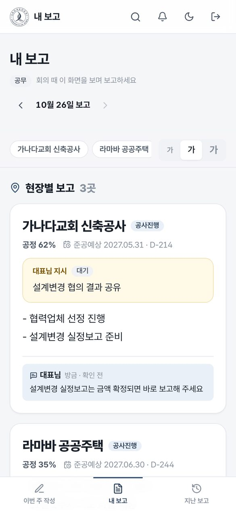
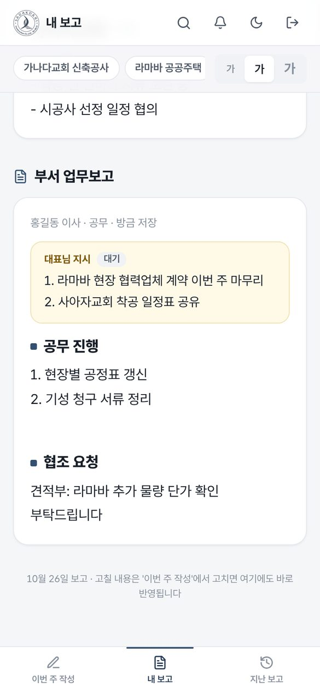
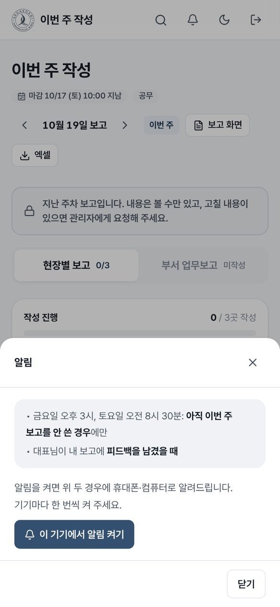
컴퓨터에서는 왼쪽에 메뉴가 있고, 쓰는 방법은 휴대폰과 같습니다.
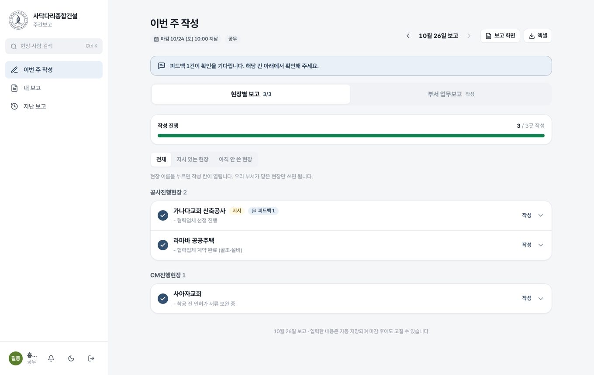